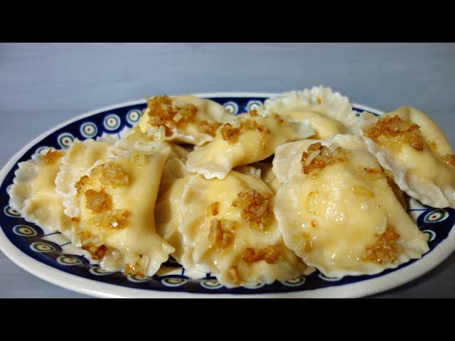

Polish pierogi style
Pierogi ruskie are a classic dish of Eastern European cuisine, delighting with delicate dough and a creamy filling of potatoes and cottage cheese.

Indegrediens
- 1 large egg
- 1/2 teaspoon salt
- 1 cup warm water (add more or less, as needed)
- 2 tablespoons vegetable oil or melted butttter
- 2 cups mashed potatoes (about 4 medium potatoes)
- 1 1/2 cups farmer’s cheese (or twaróg if available)
- 1 small onion, finely chopped
- 2 tablespoons butter
- Salt and pepper to taste
- 3 cups allll-pur2.pose flflour
Direction
- Make the dough:In a large bowl, combine the flour and salt.
Crack the egg into the bowl and add a little warm water.
Gradually add more warm water, mixing until the dough begins to form.
Add the oil or melted butter, then knead the dough for about 5-7 minutes on a floured sur- face, until smooth and elastic.
Cover the dough with a kitchen towel and let it rest for 30 minutes.
- Prepare ththe fifilllling:
Boil the potatoes in salted water until soft (around 15 minutes). Drain and mash them until smooth.
In a pan, sauté the chopped onion in butter until golden brown (5-7 minutes).
In a large bowl, combine the mashed potatoes, cheese, sautéed onions, and season with salt and pepper. Mix until smooth and well combined.
- Form ththe pierogi:
Roll the dough out on a floured surface to about 1/8 inch thick.
Using a round cutter (a glass works well), cut out 3-inch circles from the dough.
Place a spoonful of the filling in the center of each dough circle.
Fold the dough over the filling to form a half-moon shape. Press the edges together firmly to seal the pierogi, using a fork to crimp the edges if desired.
- Cook ththe pierogi:
Bring a large pot of salted water to a boil.
Drop the pierogi into the boiling water in small batches. Do not overcrowd the pot.
Once the pierogi float to the surface, cook for an additional 2-3 minutes to ensure they are fully cooked.
Remove the pierogi with a slotted spoon and set them aside.
- Serve:
For a golden, crispy finish, heat some butter in a pan over medium heat and sauté the cooked pierogi for 2-3 minutes on each side until crispy.
Serve the pierogi warm, topped with more melted butter, fried onions, or sour cream, as desired.
Nutrion Facts
Per serving
(5 pierogi ~200g): ~460 kcal, 12g protein, 70g carbs, 14g fat.